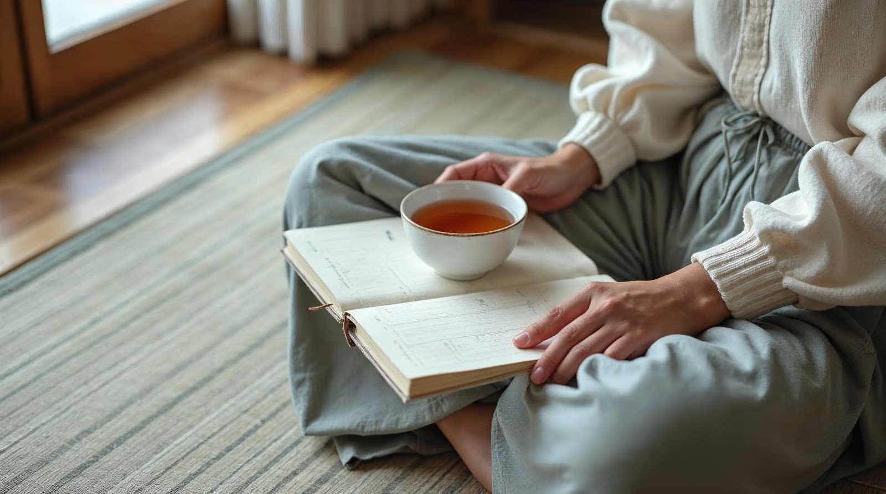
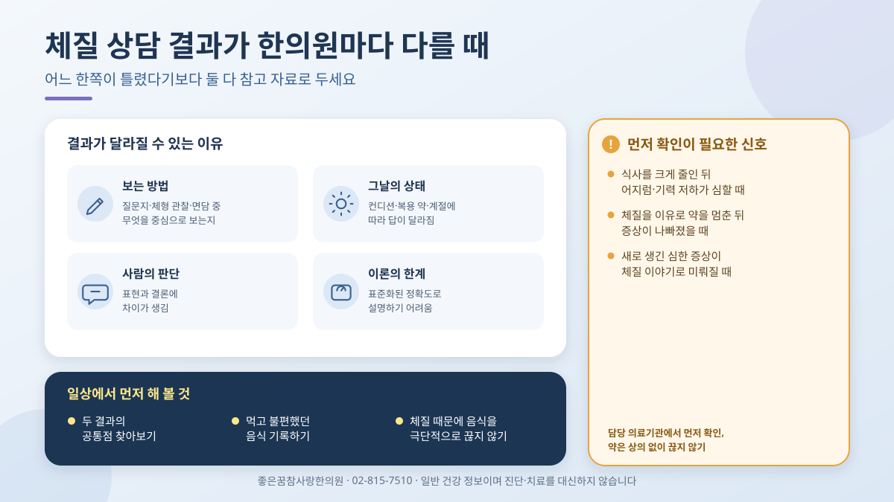

이종호 한의사 감수좋은꿈참사랑한의원 대표원장 (한의사 면허번호 19769)발행 2026-11-23 · 수정 2026-11-25
이 글의 차례
체질 상담 결과가 한의원마다 다르게 나오는 것은 생각보다 흔한 일이며, 어느 한쪽이 틀렸다고 단정하기보다 두 결과 모두 참고 자료로 두시면 됩니다. 사상체질은 근거가 제한적인 한방 이론이라 관찰 방법과 판단 기준에 따라 결과가 달라질 수 있기 때문입니다. 중요한 것은 체질 이름보다 지금의 증상과 생활입니다.
왜 결과가 다르게 나올 수 있나요
- 질문지, 체형 관찰, 면담 중 어떤 방법을 중심으로 보는지가 다를 수 있습니다.
- 그날의 컨디션, 복용 중인 약, 계절에 따라 질문에 대한 답이 달라질 수 있습니다.
- 사람이 판단하는 부분이 있어 표현과 결론에 차이가 생깁니다.
- 표준화된 정확도로 설명하기 어려운 이론이라는 한계가 있습니다.
결과가 다를 때 이렇게 정리해 보세요
- 두 곳에서 각각 어떤 질문과 관찰을 근거로 결과를 들었는지 적어 봅니다.
- 체질 이름이 달라도 "찬 음식에 속이 불편하다", "땀이 많다"처럼 공통으로 들은 설명이 있다면 그쪽을 먼저 참고합니다.
- 피하라고 들은 음식 목록이 서로 다르다면, 실제로 먹고 불편했던 음식 기록이 더 믿을 만한 기준이 됩니다.
- 어느 결과를 고르기 어렵다면 한쪽을 택하기보다 증상과 생활 중심으로 살피는 방법을 함께 상의할 수 있습니다.
자주 하는 오해
- 체질은 평생 하나로 정해져 있어 정확히 알아야만 치료가 가능하다고 여기기 쉽지만, 체질을 단정하지 않고 증상과 생활 중심으로 살피는 방법도 충분히 있습니다.
- 결과가 다르면 둘 중 한 곳이 잘못 본 것이라고 생각하기 쉽지만, 보는 방법과 그날의 몸 상태에 따라 달라질 수 있습니다.
- 체질에 맞는 음식만 먹어야 한다고 여기기 쉽지만, 한쪽으로 치우친 식사는 오히려 영양을 흐트러뜨릴 수 있습니다.
- 체질을 알면 한약이 저절로 정해진다고 생각하기 쉽지만, 한약은 지금의 증상과 진찰 소견을 함께 보고 정합니다.

예를 들면 이런 경우입니다
- 예를 들어 한 곳에서는 소음인, 다른 곳에서는 태음인이라는 이야기를 들은 직장인이라면, 두 곳 모두 찬 음식에 대한 설명이 있었는지 찾아보고 그 공통점을 생활에 먼저 반영해 볼 수 있습니다.
- 예를 들어 체질 결과에 맞춘다며 고기나 밀가루를 한꺼번에 끊은 수험생이라면, 식사량이 줄어 기운이 떨어지지 않았는지부터 함께 살핍니다.
- 예를 들어 체질 이야기를 듣고 가족 식사를 사람마다 따로 차리느라 부담이 커진 가정이라면, 실제로 불편했던 음식 위주로 단순하게 정리하는 방법을 함께 이야기합니다.
- 예를 들어 어르신이 체질에 좋다는 말을 듣고 특정 건강식품을 오래 드시고 있는 경우라면, 복용 중인 약과 겹치지 않는지, 소화나 대변에 변화가 없는지부터 함께 확인합니다.
먼저 이렇게 여쭙니다
- 이전에 어디에서, 어떤 방법으로 체질 이야기를 들으셨나요?
- 그때 들은 이유나 설명이 기억나시나요?
- 체질 결과 때문에 바꾼 음식이나 생활이 있나요?
- 지금 가장 불편한 증상은 무엇인가요?
- 체질 결과에 따라 드시고 있는 한약이나 건강식품이 있나요?
일상에서 먼저 해 볼 수 있는 것
- 두 결과의 공통점(예: 찬 음식에 예민함)이 있는지 찾아보기
- 체질 이름보다 실제로 먹고 불편했던 음식을 기록하기
- 결과가 다르다는 이유로 걱정하기보다 궁금한 점을 질문으로 적어 오기
- 체질 때문에 극단적으로 음식을 끊지 않기
- 체질 이야기를 듣고 시작한 건강식품이나 차가 있다면 이름과 드신 기간 적어 두기
스스로 점검해 보세요
- 서로 다른 체질 결과를 두 번 이상 들은 적이 있다
- 체질 때문에 특정 음식을 몇 주 이상 끊고 있다
- 음식을 줄인 뒤 체중이 빠지거나 기운이 떨어졌다
- 결과가 달라 어느 쪽을 따라야 할지 걱정된다
- 체질에 맞지 않는다는 말을 듣고 처방받은 약을 줄인 적이 있다
- 지금 가장 불편한 증상이 체질 이야기에 가려져 있다
하나라도 해당한다면 진료 때 이전 체질 결과와 함께 말씀해 주세요.
한의원에서 함께 살필 수 있는 경우
- 이전 체질 상담 내용을 알고 계시면 말씀해 주세요. 어떤 점에서 그렇게 판단했는지 함께 보겠습니다.
- 체질 이야기에서 불안이 생겼다면 그 부분부터 정리해서 말씀드립니다.
- 한약이나 음식 선택에서 체질적 경향은 참고 정보 하나로만 함께 고려합니다.
좋은꿈참사랑한의원에서는 체질 이름을 정하는 것보다 지금의 불편과 생활을 먼저 듣고, 진맥을 기본으로 하고 필요하다고 판단될 때 설진·복진을 더해 살펴 침이나 한약 상담 등을 정합니다. 체질을 단정하지 않고 증상과 생활 중심으로 살피는 방식도 충분히 가능합니다.
첫 방문에는 문진표를 쓴 뒤 원장이 지금 불편한 증상과 그 시기, 잠·소화·대소변·땀·몸의 온기를 여쭙고, 이전 체질 결과가 있다면 들은 곳과 방법도 함께 듣습니다. 이어서 모든 분께 진맥을 짚고, 필요하다고 판단될 때 혀와 배를 살핍니다.
이렇게 모은 단서를 놓고 오늘 할 치료와 이유, 생활에서 먼저 해 볼 것을 설명드리며, 한약 상담이 필요한 경우에도 체질 이름보다 지금 증상과 진찰 소견을 기준으로 이야기합니다.
이렇게 기록해 오시면 상담이 쉬워집니다
- 이전 체질 결과와 들은 곳, 시기
- 체질 결과 뒤 바꾼 음식이나 생활
- 그 뒤 몸에서 달라진 점
- 지금 복용 중인 약과 한약
- 체질 결과를 들은 당시 가장 불편했던 증상(지금과 같은지 다른지)
- 체질 결과지나 설문지가 있다면 사진이나 원본
며칠 지켜보고, 언제 바로 확인하나요
- 체질 결과에 맞춰 음식을 바꿨다면 2~4주 동안 식사량, 체중, 기운, 대변을 적어 보세요. 몸이 편해졌는지 불편해졌는지가 체질 이름보다 쓸모 있는 기준이 됩니다.
- 음식을 줄인 뒤 한 달 사이 체중이 눈에 띄게 줄거나 어지럼이 이어진다면, 식사를 원래대로 돌리고 기다리지 말고 진료를 받아 보세요.
- 체질 이야기 때문에 처방받은 약을 멈췄다면, 지금 증상이 없더라도 바로 처방한 의사와 상의하세요.
이런 증상은 먼저 확인이 필요합니다
- 체질에 맞춘다며 식사를 크게 줄인 뒤 어지럼이나 기력 저하가 심한 경우
- 체질이 맞지 않는다는 이유로 약을 멈춘 뒤 증상이 나빠진 경우
- 새로 생긴 심한 증상이 체질 이야기로 미뤄지고 있는 경우
이런 경우에는 담당 의료기관에서 먼저 확인하세요. 약은 처방한 의사와 상의 없이 줄이거나 끊지 않습니다.
함께 읽으면 좋은 글
- 사상체질은 무엇이고 한방 이론으로서 어떤 한계가 있나요?
- 사상체질은 무엇이고 어떻게 알아보나요?
- 한약을 처방하기 전에 꼭 진맥을 하는 이유는 무엇인가요?

여쭙는 것
- 이전에 어디에서, 어떤 방법으로 체질 이야기를 들으셨나요?
- 그때 들은 이유나 설명이 기억나시나요?
- 체질 결과 때문에 바꾼 음식이나 생활이 있나요?
생활에서 해 볼 것
- 두 결과의 공통점(예: 찬 음식에 예민함)이 있는지 찾아보기
- 체질 이름보다 실제로 먹고 불편했던 음식을 기록하기
- 결과가 다르다는 이유로 걱정하기보다 궁금한 점을 질문으로 적어 오기
한의원에서 함께 살필 것
- 이전 체질 상담 내용을 알고 계시면 말씀해 주세요. 어떤 점에서 그렇게 판단했는지…
- 체질 이야기에서 불안이 생겼다면 그 부분부터 정리해서 말씀드립니다.
- 한약이나 음식 선택에서 체질적 경향은 참고 정보 하나로만 함께 고려합니다.
먼저 확인이 필요한 신호
- 체질에 맞춘다며 식사를 크게 줄인 뒤 어지럼이나 기력 저하가 심한 경우
- 체질이 맞지 않는다는 이유로 약을 멈춘 뒤 증상이 나빠진 경우
- 새로 생긴 심한 증상이 체질 이야기로 미뤄지고 있는 경우
한눈에 보는 표
| 구분 | 핵심 |
|---|---|
| 여쭙는 것 | 이전에 어디에서, 어떤 방법으로 체질 이야기를 들으셨나요? 그때 들은 이유나 설명이 기억나시나요? |
| 생활에서 해 볼 것 | 두 결과의 공통점(예: 찬 음식에 예민함)이 있는지 찾아보기 체질 이름보다 실제로 먹고 불편했던 음식을 기록하기 |
| 한의원에서 함께 살필 것 | 이전 체질 상담 내용을 알고 계시면 말씀해 주세요. 어떤 점에서 그렇게 판단했는지 함께 보겠습니다. 체질 이야기에서 불안이 생겼다면 그 부분부터 정리해서 말씀드립니다. |
| 먼저 확인이 필요한 신호 | 체질에 맞춘다며 식사를 크게 줄인 뒤 어지럼이나 기력 저하가 심한 경우 체질이 맞지 않는다는 이유로 약을 멈춘 뒤 증상이 나빠진 경우 |
자주 묻는 질문
체질이 바뀌기도 하나요?
체질을 어떻게 이해하느냐에 따라 의견이 갈립니다. 한 번의 결과를 고정된 것으로 보지 않습니다.
어느 체질이라고 단정해 주지 않아도 괜찮나요?
괜찮습니다. 체질을 단정하지 않고 증상과 생활 중심으로 살피는 방식도 있습니다.
체질 검사를 여러 번 받아도 되나요?
가능하지만 결과가 달라질 수 있다는 점을 염두에 두시길 권합니다.
체질 결과가 다르면 한약도 달라지나요?
한약은 체질 이름 하나보다 지금의 증상과 진맥 등 진찰 소견을 함께 보고 정합니다. 궁금한 점은 상담 때 편하게 여쭤 주세요.
체질 상담을 받지 않고 진료만 받아도 되나요?
됩니다. 체질 상담을 원하지 않으시면 미리 말씀해 주세요. 지금의 불편과 생활, 진맥 소견을 중심으로 살핍니다.
이전 한의원의 체질 결과지를 가져가도 되나요?
네, 가져오시면 어떤 근거로 그렇게 판단했는지 함께 보며 지금 상태와 비교해 이야기합니다.
좋은꿈참사랑한의원은 재진 때 지난번 이야기부터 이어서 여쭙니다. 진료시간과 예약은 오시는 길에서 확인하세요.
어디서 상담받을 수 있나요?
좋은꿈참사랑한의원은 서울 동작구 만양로2길 2 신성빌딩 3층·5층(서울 동작구 상도동, 7호선 상도역 3번 출구 근처)에 있습니다. 한의사 3명(이종호 대표원장, 조영기 수석진료원장, 정원영 진료원장)이 진료합니다. 진료시간은 평일 09:30~20:00(점심 13:00~14:00), 토·일·공휴일 09:30~15:00이며, 방문 전 전화로 확인을 권합니다. 예약은 네이버 예약, 카카오톡 상담, 전화 02-815-7510로 받습니다.
이 글은 일반적인 건강 정보이며 개인의 진단이나 치료를 대신하지 않습니다. 증상이 있거나 복용 중인 약이 있다면 진료를 통해 확인하세요. 치료 효과는 개인마다 다를 수 있습니다.
작성 기준: 일반적으로 알려져 있는 건강 정보를 참고해 정리했습니다(대표원장 감수). 증상 기록은 1~2주 동안 하루 1회, 비슷한 시간에 적어 오시면 지난 상태와 비교하기 쉽습니다.